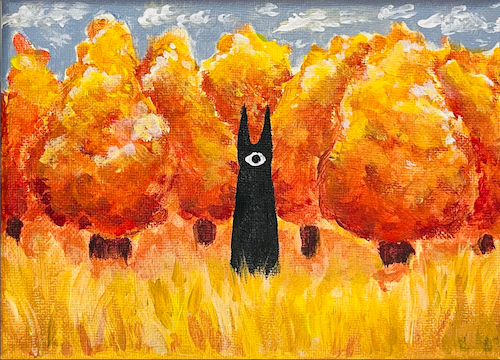
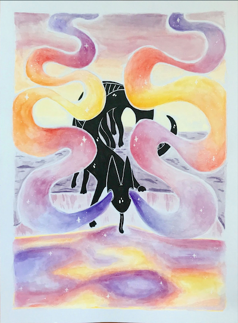
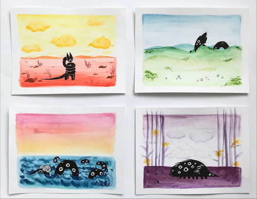
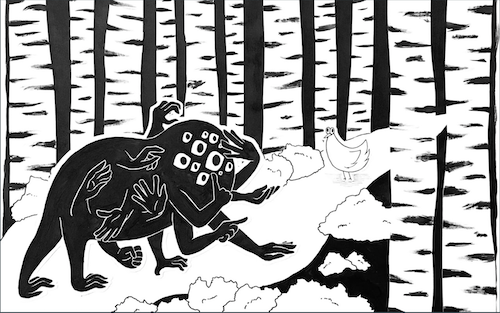
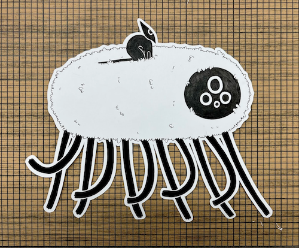
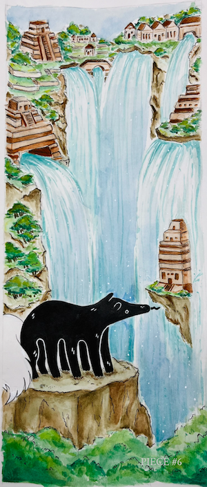
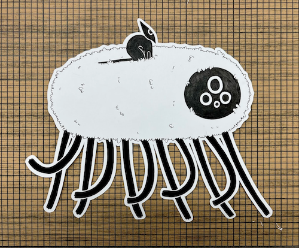
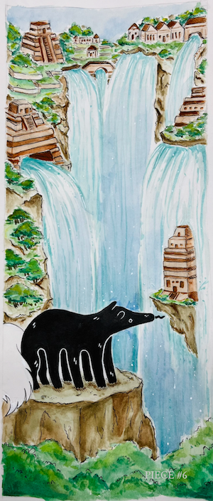

I enjoy drawing and illustration. Here are some drawings that I've done over the past year!
   
 



I am quite a fan of the creature theme. These pieces (save the first, which is acrylic paint on canvas) are all ink and/or watercolor on paper.